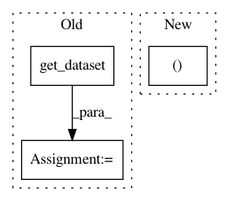

ccad9100803437a48c5a6d212e5b284c7bb680bc,thumt/bin/dist_trainer.py,,main,#Any#,317
Before Change
with tf.Graph().as_default():
if not params.record:
// Build input queue
src_inputs = get_dataset(params.input[0])
tgt_inputs = get_dataset(params.input[1])
inputs = [src_inputs, tgt_inputs]
features = dataset.get_training_input(inputs, params)
else:
features = record.get_input_features(
os.path.join(params.record, "*train*"), "train", params
After Change
def all_reduce_fn(tensor):
return hvd.allreduce(tensor, compression=hvd.Compression.fp16)
loss, ops = optimize.create_train_op(loss, opt, global_step,
all_reduce_fn, params)
restore_op = restore_variables(args.checkpoint)
In pattern: SUPERPATTERN
Frequency: 3
Non-data size: 3
Instances
Project Name: THUNLP-MT/THUMT
Commit Name: ccad9100803437a48c5a6d212e5b284c7bb680bc
Time: 2019-03-07
Author: playinf@stu.xmu.edu.cn
File Name: thumt/bin/dist_trainer.py
Class Name:
Method Name: main
Project Name: dnouri/skorch
Commit Name: fe51a9545f756036268b18583a3ca52623b082ff
Time: 2018-04-06
Author: benjamin.bossan@ottogroup.com
File Name: skorch/net.py
Class Name: NeuralNet
Method Name: fit_loop
Project Name: rwth-i6/returnn-experiments
Commit Name: 07787e23631f78ebd8927bf31b10896f7f0969b0
Time: 2021-03-24
Author: albert.zeyer@rwth-aachen.de
File Name: 2021-transducer-thesis-merboldt/librispeech/rnnt-fs.bpe1k.readout.zoneout.lm-embed256.lr1e_3.no-curric.bs12k.mgpu.retrain1.common.config.py
Class Name:
Method Name: